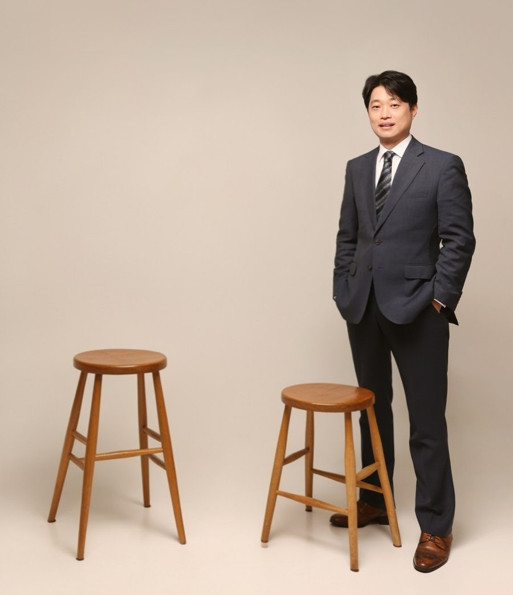
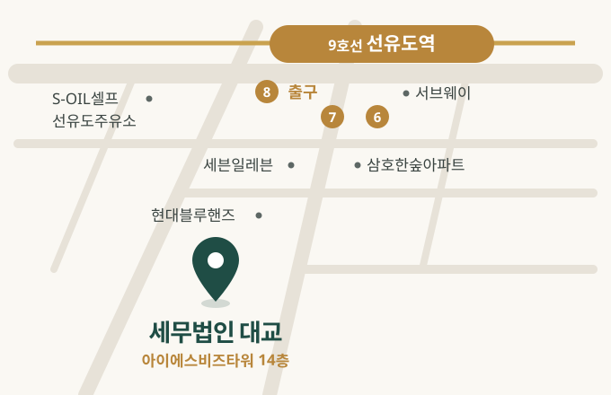

상속, 처음이시죠?
신고부터 세무조사까지,
상속 전문 세무사가 함께합니다
무엇부터 해야 할지 막막한 순간, 재산 확인부터 상속세 신고와 이후 국세청 검토까지 순서대로 안내해 드립니다.
상속세 신고기한 확인
돌아가신 날을 넣으면 꼭 챙길 기한을 알려드립니다.
이런 상황이신가요?
상속을 겪는 가족은 대부분 비슷한 고민에서 시작합니다.
상속 업무
상속 한 가지에 집중합니다. 계산에서 끝나지 않고 신고 이후 검토와 조사까지 이어서 맡습니다.
상속세 신고
상속재산과 채무를 확인하고, 받을 수 있는 공제를 빠짐없이 적용해 기한 안에 신고합니다.
사전증여 · 상속 설계
미리 증여할지, 상속으로 넘길지 가족 상황에 맞춰 세금을 비교하고 순서를 정합니다.
사망 전 인출금 정리
돌아가시기 전 1~2년간의 예금 인출과 재산 처분 내역을 정리해 사용처를 소명합니다.
부동산 평가 검토
상가·토지·꼬마빌딩의 평가 방법을 비교하고, 상속 후 매각 시 양도세까지 함께 계산합니다.
상속세 조사 대응
국세청의 신고 내용 확인과 세무조사에 자료 제출부터 조사 입회까지 직접 대응합니다.
상속재산 분할 · 배우자공제
상속인 간 분할 방법에 따라 달라지는 세금을 비교하고, 배우자상속공제 요건을 챙깁니다.
가족이 일본·중국에 있어도
상속은 한 곳에서 끝납니다
다년간의 일본기업·중국기업 세무서비스 경험을 바탕으로,
일본·중국 상속 업무 지원을 합니다.
✓해외에서 발급받아야 하는 필요서류 안내부터 발급까지 지원합니다
상속 후 할 일, 기한 순서대로
기한을 놓치면 가산세나 공제 손실로 이어질 수 있습니다. 위에서 돌아가신 날을 넣으면 정확한 날짜를 볼 수 있습니다.
사망신고 · 안심상속 원스톱 신청
주민센터에서 사망신고를 하면서 금융·토지·자동차·세금 등 재산을 한 번에 조회할 수 있습니다.
상속포기 · 한정승인 결정
빚이 재산보다 많을 수 있다면 법원에 상속포기나 한정승인을 신청할지 결정해야 합니다.
상속세 신고 · 납부
기한 내 신고하면 세액의 3%를 공제받습니다. 금액이 크면 연부연납 신청도 이때 함께 합니다.
상속 부동산 취득세 · 등기
부동산을 상속받으면 취득세를 신고·납부하고 상속등기를 합니다.
전문가 업무 조율
상속에 필요한 여러 전문가 업무 조율은 세무사가 진행합니다. 등기 따로, 감정 따로 전문가를 찾아다니지 않으셔도 됩니다.
상담은 이렇게 진행됩니다
첫 상담
가족 구성과 재산 상황을 듣고, 필요한 서류와 일정을 안내합니다.
재산 확인 · 평가
재산과 채무를 조회하고 부동산·주식의 평가 방법을 정합니다.
세액 비교 · 신고
분할 방법과 공제를 비교해 상속인에게 최적화한 방법으로 신고합니다.
상속인들이 이해하기 쉽게 풀어 쓴 상속세 검토 보고서를 함께 드립니다.
신고 후 대응
국세청 검토와 자료 요청, 조사까지 상속 전문 세무사가 대응합니다.
세무사 소개
서울대학교 출신 세무사와 국세청 출신 세무사가 함께 상속을 맡습니다.

조근열 세무사
“상속은 한 번뿐인 일입니다.
처음부터 끝까지 같은 사람이 책임지고 안내하겠습니다.”
서울대학교 동문 세무사로서 세무서 국세심사위원으로 활동하며 납세자와 과세관청 양쪽의 시각을 함께 보고 있습니다. 그 경험으로 복잡한 상속 세금을 쉽게 풀어 설명해 드립니다.
- 학력
- 서울대학교 대학원 농경제학 석사 (경제학석사)
서울대학교 농경제사회학부 졸업 - 현재
- 세무법인대교 (영등포점) 대표세무사
일본어·중국어 가능 세무사와 함께 해외 관련 업무 수행 - 공직 활동
- 영등포세무서 국세심사위원회 위원 (2024~현재, 연임)
영등포세무서 영세납세자지원단 (2022~2024)
서울특별시 마을세무사 (2020~2022) - 세무사회
- 한국세무사회 회계솔루션개발위원 (2025~현재)
한국세무사 석박사회 상임이사 (2024~현재)
한국세무사회 전산세무회계자격시험 출제위원 (2023~2025) - 저서
- 『부동산 세금 Navi 52선』 공저 (2021)
- 콘텐츠
- 유튜브 ‘안심상속닷컴’ 운영 · 상속세 블로그 연재
서봉수 세무사
“조사 현장에서 쌓은 경험으로,
신고 전에 문제가 될 부분을 먼저 짚어드립니다.”
국세청 조사국에서 직접 조사 업무를 맡았던 세무사입니다. 국세청이 상속세 신고서의 어떤 부분을 보는지 알기에, 사전 점검과 상속세 조사 대응을 함께 책임집니다.
- 주요 경력
- 국세청 출신 세무사
중부지방국세청 조사3국 근무
예일세무법인 파트너 세무사 - 현재
- 세무법인대교 (영등포점) 파트너 세무사
SJ세무회계 대표 세무사
상속세, 영상과 글로 먼저 알아보세요
자주 받는 질문을 쉽게 풀어 정기적으로 올리고 있습니다.
자주 묻는 질문
재산이 얼마부터 상속세가 나오나요?
다만 재산 평가 방법에 따라 과세 여부가 달라질 수 있습니다. 추후 양도세 절세까지 고려한다면 세무 상담을 받는 것이 좋습니다.
신고기한은 언제까지인가요?
부모님이 돌아가신 뒤, 상속세 신고 전에 예금을 찾아도 되나요?
▶ 1분 영상으로 보기
사망보험금도 상속세를 내나요?
▶ 1분 영상으로 보기
상속세가 많이 나오면 나눠서 낼 수 있나요?
▶ 1분 영상으로 보기
상속인끼리 재산 나누기 합의가 안 되면 신고는 어떻게 하나요?
▶ 1분 영상으로 보기
상담에는 무엇을 준비하면 되나요?
수수료는 어떻게 정해지나요?
상담 신청
남겨 주신 연락처로 세무사가 직접 연락드립니다. 상담 내용은 세무사법에 따라 비밀이 지켜집니다.
